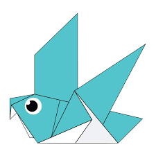
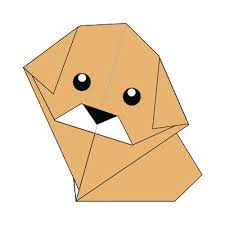

Camel
- Camel's ears are furry
- Camels can move easily across the sand because of its specially designed
- When they find water, they drink as much as possible

Chameleon
- Chameleons are a part of the iguana suborder
- Changing skin color is an important part of communication among Chameleons
- Most Chameleons have a prehensile tail that they use to wrap around tree braches

Pigeon
- Pigeons are incredibly complex and intelligent animals
- Pigeons are highly sociable animals
- Pigeons are renowned for their outstanding navigational abilities

Teddy Bear
- The teddy was named after President Theodore Roosevelt, after he refused to shoot a bear during a 1902 hunting trip.
- The term bear-hug was first recorded in 1846
- Besides being cuddly and cute, Teddy bears offer unconditional love, reassurance, security and companionship.

Panda
- Giant pandas are good at climbing trees and can also swim
- Pandas are "lazy" — eating and sleeping make their day
- An adult Panda can eat 12–38 kilos of bamboo per day!

Cicada
- Cicadas can survive a huge fall as babies, or nymphs
- The loud whirring or buzzing sound you hear is an all-male cicada chorus
- Most have red-orange eyes

Puppy
- Puppies are born blind and deaf
- Puppies become 'adults' when they turn one
- They spend 15–20 hours a day sleeping

- A group of frogs is called an army
- The world's largest frog species is known as the 'Goliath Frog'
- Frogs drink water through their skin